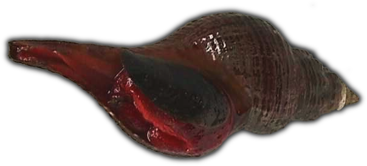

On Debian/Ubuntu :
$ sudo apt-get install subversion
On Fedora/Redhat :
$ sudo yum install subversion
On other Unix flavors: I dunno, build it from source?
On Debian/Ubuntu :
$ sudo apt-get install ssh
On Fedora/Redhat : Should be pre-installed.
If you already have a private key for ssh (.ssh/id_dsa), you can skip this step.
$ ssh-keygen -t dsa -b 1024
Leave the default filename, and the password may be left blank.
Modify your own .ssh/config file in a text editor to use your username whenever you connect to zoobody.com. This will be your first initial, last name; for example: "cdodt".
You should add lines in your config file that look like this:
Host zoobody.com User cdodt
Now transfer your public key over to zoobody.com. Select and paste everything on the following lines into your shell:
ssh-keygen -y -f ~/.ssh/id_dsa | \
ssh zoobody.com 'mkdir -p ~/.ssh;
cat >> ~/.ssh/authorized_keys;
chmod -R u=rwX,g=,o= .ssh'
The password is the same password you were initially given for Bugzilla.
$ ssh zoobody.com
You should see a bash shell.
Do this while logged into zoobody.com:
cdodt@zoobody ~ $ passwd Enter the new password (minimum of 5, maximum of 8 characters). Please use a combination of upper and lower case letters and numbers. New password: Re-enter new password: Password changed.
Do this on your local machine. (Log out of zbdev if you are still logged in to the shell.)
$ svn co svn+ssh://zoobody.com/zoobody/Zoobody/trunk Zoobody A Zoobody\Cardinal A Zoobody\Cardinal\TODO.txt A Zoobody\Cardinal\py2exe_setup.py ...
This will create a local directory named Zoobody, and it will check out everything at that URL.
The Zoobody Subversion URL is:
svn+ssh://zoobody.com/zoobody/Zoobody/trunk